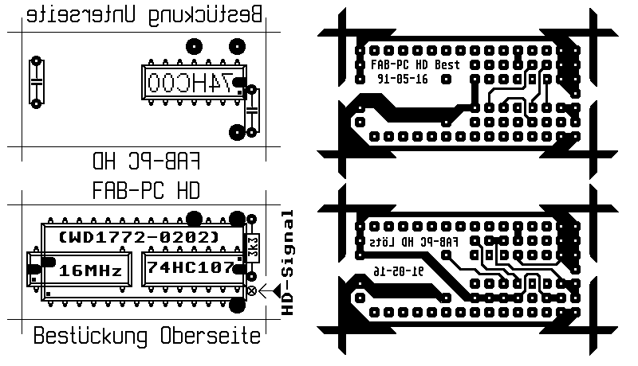

|
|
11.3.4 FAB HD Modul
FAB HD-Modul
1) Was kann das FAB (C) HD-Modul?
Der Takteingang des Floppy Controllers wird entweder mit 16 MHz
aus dem eigenen Oszillator (keine Shifter-Belastung) für den HD
Modus oder mit durch Teilung erzeugten 8 MHz (wie Originalzustand)
für den DD-Modus ver- sorgt.
Das Modul wird durch den Low-aktiven Eingang in den HD-Modus
geschaltet. Eine Verknüpfung mit Selektsignalen erfolgt nicht.
Nach der Shugart-Norm sind Ausgänge der Floppys lowaktiv und nur
aktiv, während das Laufwerk selektiert ist. VIELE
FLOPPY-HERSTELLER HALTEN SICH NICHT AN DIESE NORM. Beim Autor arbeiten
Citizen Laufwerke, bei denen eine Brücke gelötet werden
mußte, ein NEC Laufwerk gibt nach Löten einer Brücke
das Signal OHNE Berücksichtigung des Select. Selbst bei nur einem
Laufwerk wäre dann BEI NICHT EINGELEGTER DISKETTE die hohe
Frequenz ständig aktiviert, was mit Sicherheit zu thermischen
Problemen führt. Das (auch sonst empfehlenswerte) TEAC FD-235HF
funktioniert mit folgen- den Jumpern:
(E4-E3)(D3-C3)(B4-A4)(B3-A3)(E1-D1) und ein Select. Das HD Signal
liegt üblicherweise auf Pin 2. Dieser ist im Atari ST nicht
belegt.
Das Modul kann mit den drei hervorgehobenen Pins AUF den
Controller gelötet werden. Die Verbindung von Pin 18 (Takteingang
des Controllers) ist dann auf der Platine oder am Bein des Controllers
zu trennen.
Alternativ (und besser) wird der Controller ausgelötet und
durch einen Sockel ersetzt. ES MUSS DAFÜR EIN EINFACHER SOCKEL
_OHNE_ GEDREHTE KON- TAKTE VERWENDET WERDEN. Als Controller Sockel auf
der Modul Platine werden wire-wrap Fassungsleisten verwendet. Pin 18
wird nach dem Einlöten abgekniffen.
Der Eingang wird mit der Leitung 2 des Shugart Busses verbunden.
Die ICs werden nicht gesockelt. Viele Pins werden auf beiden
Seiten der Platine verlötet. VORSICHT: Die Unterseiten der beiden
ICs sind nicht zugänglich, wenn das andere eingesetzt ist. Es
muß erst eine Pinreihe abgebogen und von unten verlötet,
dann das zweite IC eingesetzt und von unten verlötet und zum
Schluß das erste IC zurückgebogen und mit der zweiten
Pinreihe verlötet werden. die Lötungen von oben sind
natürlich kein Problem, allerdings sollten die Fassungsstreifen
als letztes ein- gesetzt werden.
Der Oszillator macht allein etwa die Hälfte der Gesamtkosten
aus. Ohne ihn liegen diese unter zehn Mark. Er kann ohne weiteres weg
gelassen und die 16 MHz vom Shifter (bzw. irgeneiner günstig
gelegenen Durchkontak- tierung) abgegriffen werden. Für
höhere Betriebssicherheit und geringere Belastung eines teuren
Spezialbauteils wird davon aber abgeraten.
6) Und wo kriege ich das her?
Alle Bauteile sind handelsüblich. Die Platine kann für
DM 5,- (ungebohrt und natürlich nicht durchkontaktiert) vom Autor
bezogen werden. Da ich sie auch erst bestellen muß, kann das
aber etwas dauern. Das Porto ist in den DM 5.- natürlich _nicht_
enthalten.
7) Noch Fragen? Der Autor kann erreicht werden über:
Mausnet:
Post:
(frankierter Rückumschlag bitte!(
Tel: 02174/ 41824
Dies ist die erste Version der Anleitung (die Schaltung selbst
läuft schon länger zuverlässig mit WD 1772-02-02 und
auch mit VLSI 1772) Um Korrekturen und Hinweise wird gebeten.
 Abbildung 1 - Layout, Löt- und Bestückungsseite
|
|
|